Clicking on a photo might take you to more information about that person. Clicking on an arrow will take you to another level in the family tree. Below the tree we have some photos from a few notable times in their married life.

James Edward James (1923 - )
Eileen May James (nee Ludlam) (1921 - 2012)
 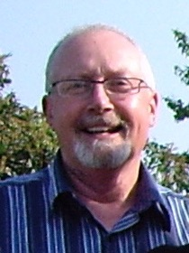
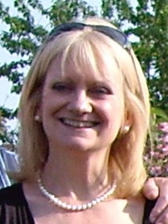
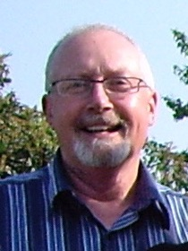
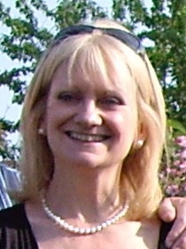
Married 22nd June 1974
David Edward James (1948 - )
Alan Robert James (1953 - )
Christene James
(nee Beauchamp) (1952 - )
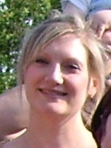
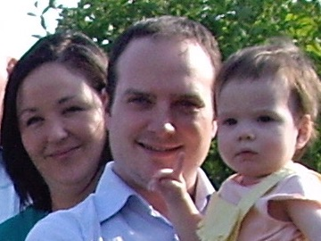
Laura Goss
(nee James) (1977 - )
Richard James (1979 - )
Wedding
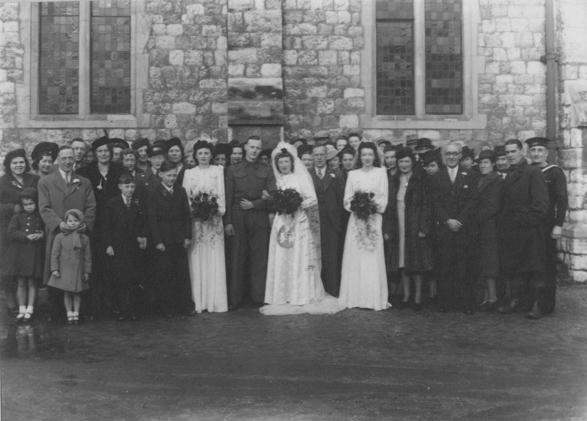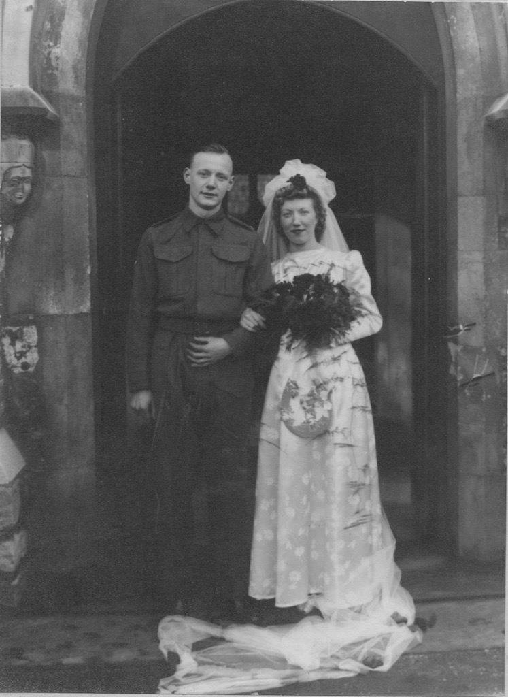Eileen and Jim were married on Saturday 6th February 1943 at St James's Church in Fore Street, Edmonton. Clicking on the photo on the left will open a bigger version. You can identify some of the people from the 'mug shots' on other pages. However, we don't know the fellow wearing the wellington boots on the right!
Again you can click on the marriage certificate to see a bigger version. Note that Jim was 19, whereas Eileen was 21. The 'coloured' photo was taken in 1942, before they were married, but it does show just how young they were.
 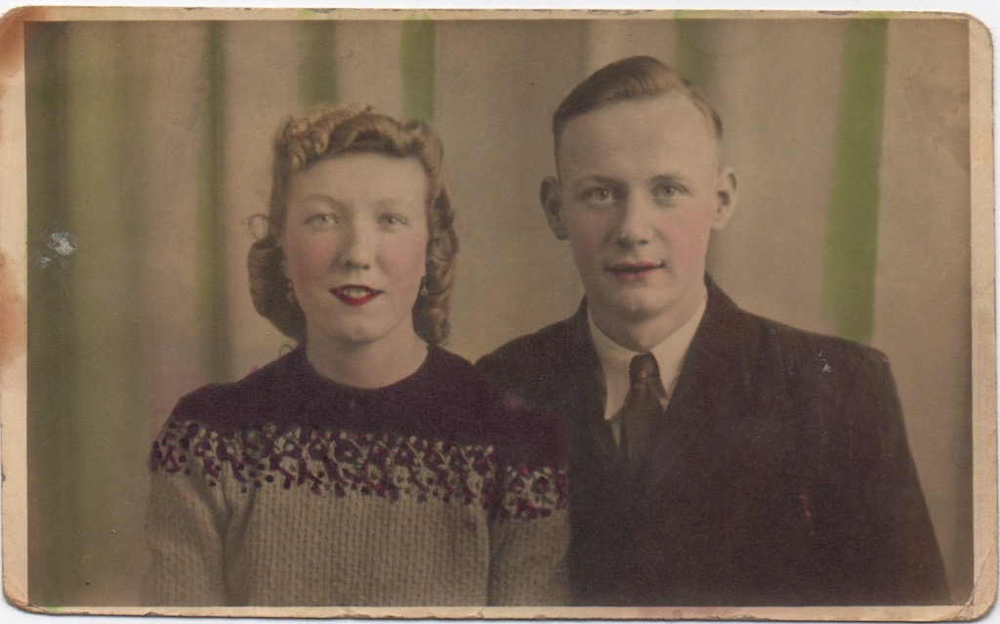
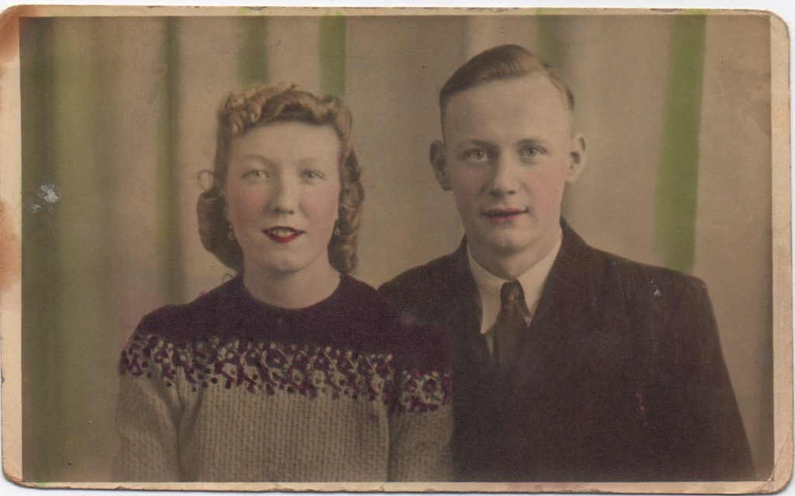
War Time
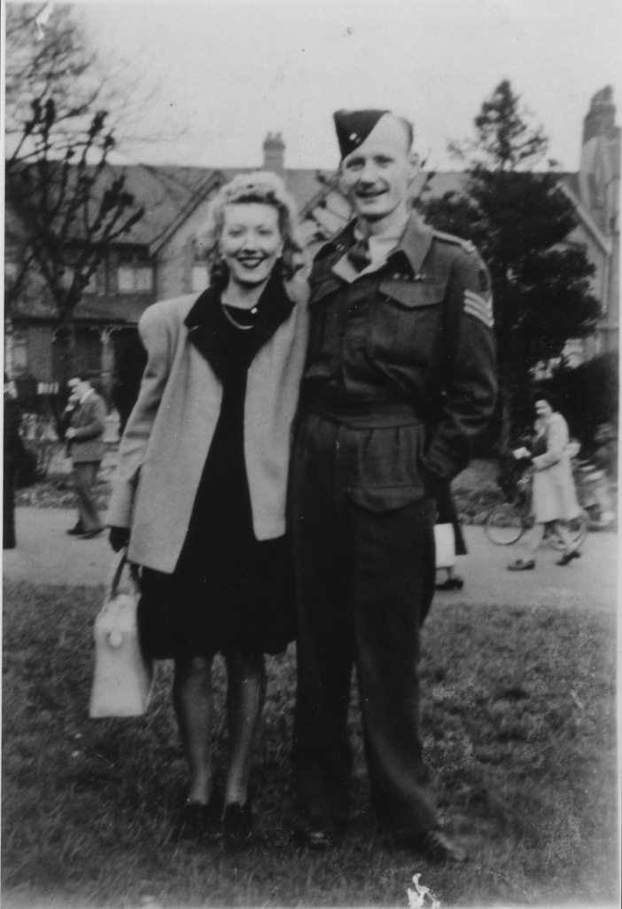More photos of Jim when he was in the army can be found on his page and details of his exploits are in his notes. However, this photo was obviously taken towards the end of the war, since he is already a seargent.
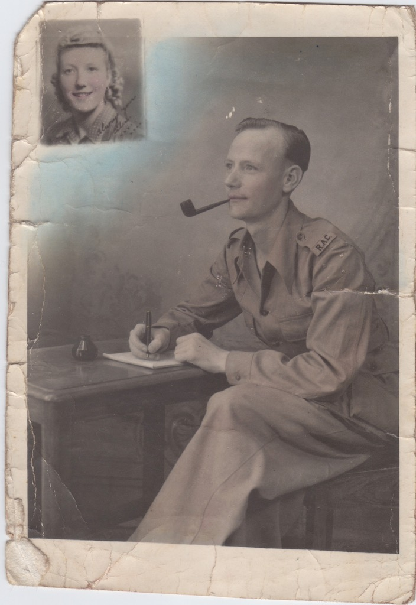Jim 'thinking' of Eileen must have been taken shortly after he went to India.
Diamond Wedding
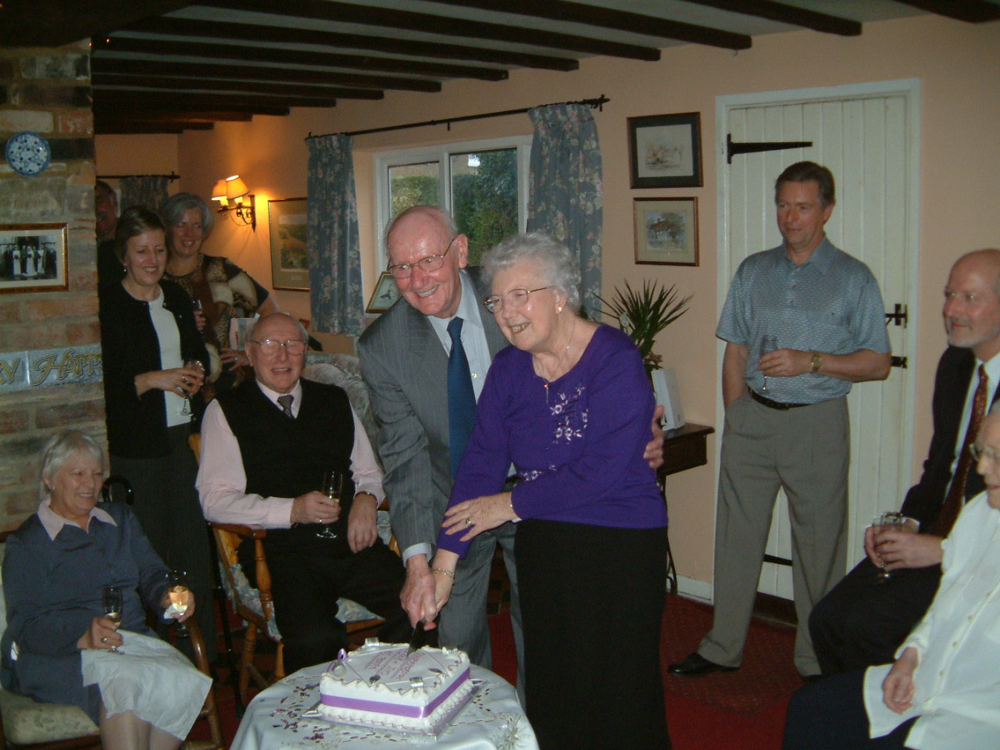So on the 6th February 2003 it was Eileen and Jim's Golden Wedding Anniversary. This was a Thursday, so at the weekend a lot of the family met at Alan's house in Bedfordahire for a celebration.
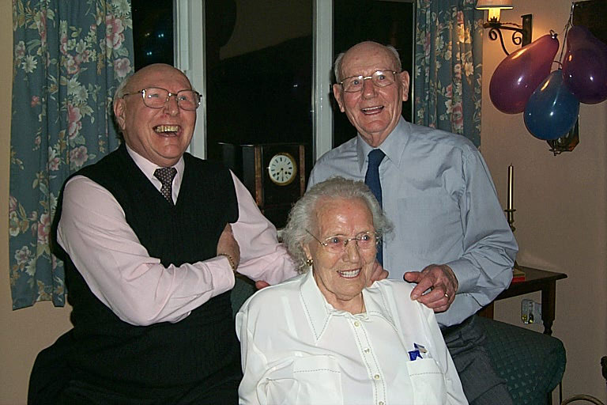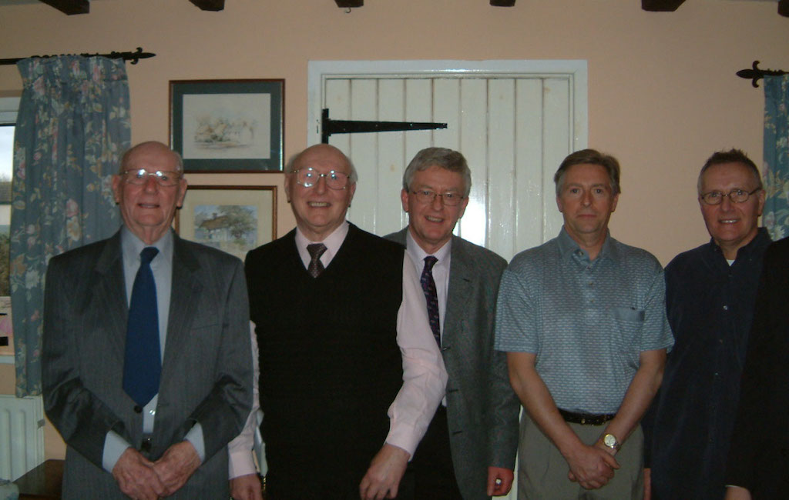Jim's only remaining siblings, Lil and Mick, were able to come, along with a number of their nephews. From left to right we have Anthony (Lucy's son), Martin (Elsie's son) and Robert (Lil's son).
Finally there is a photo of them holding their card from the Queen.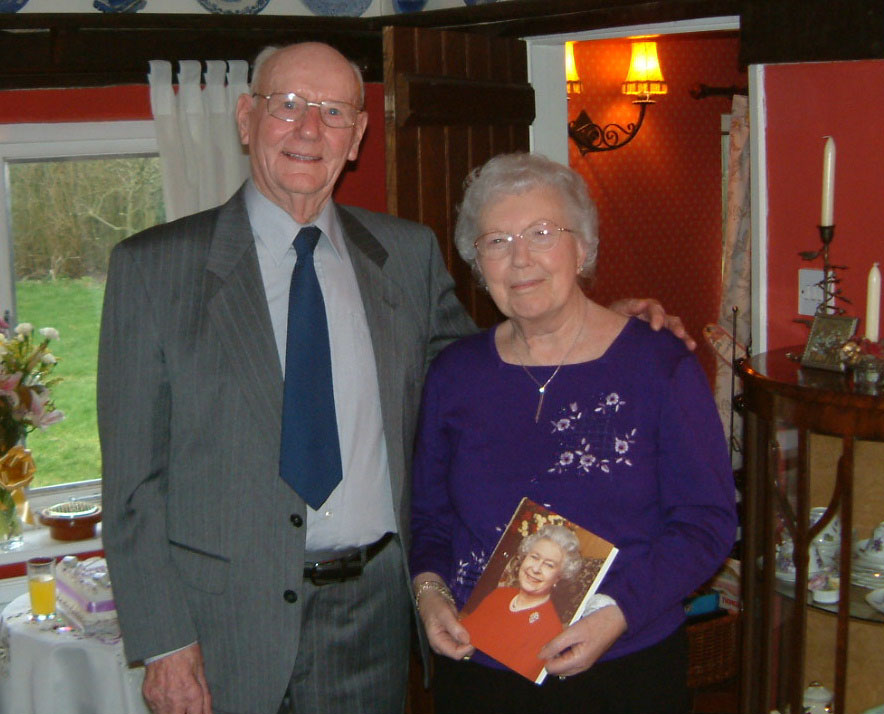
Houses
Here we try to record the houses or, at least, the places that Eileen and Jim lived during their married life.
| Cheshunt, Hertfordshire | A maisonette | |
| Edmonton, Middlesex (then Greater London) | A flat | |
| About 1957-1988 | 34 Ashwood Road, Potters Bar, Herfordshire | |
| 1988-1992 | Brookside Avenue, Statham, Lymm, Cheshire | Moved in on 27th May 1988 |
| 1992-2017 | 30 Berriedale Drive, Sompting, Lancing, West Sussex, BN15 0LE | Moved in on 24th April 1992. Eileen died there in 2012. |
| 2017-present | Victoria Grand, 22 Mill Road, Worthing West Sussex, BN11 4LF | Jim moved to Victoria Grand on 11th December 2017, having spent three weeks there earlier in the Autumn. |